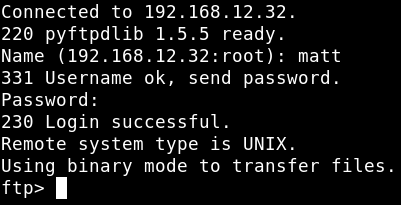

4.1 Log into FTP
Let's log into FTP with user ‘matt’.
Username: “matt”
Password: “cheese”
Output:

We've enter to FTP connection sucessfully but we can't access to "var/html/www' folder. So we can't upload our payload to that folde.
Let's try SSH approach. Index
Index